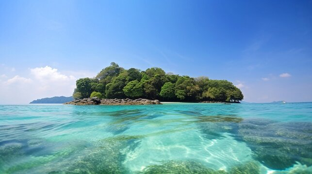

Highlights
- Radhanagar Beach (Havelock Island): Famous for its pristine white sands and turquoise waters, often rated as one of Asia’s best beaches.
- Scuba Diving and Snorkeling (Havelock & Neil Island): Explore vibrant coral reefs and marine life in some of India’s best dive sites.
- Cellular Jail (Port Blair): A historical landmark with light and sound show depicting India’s freedom struggle.
- Ross Island: Explore the ruins of British colonial buildings now reclaimed by nature, offering unique photographic opportunities.
- Baratang Island: Known for limestone caves, mangrove forests, and mud volcanoes for an offbeat adventure.
- Neil Island: Relax at beaches like Laxmanpur, Bharatpur, and Sitapur, each known for calm waters and picturesque sunsets.
- Elephant Beach (Havelock Island): Perfect for water sports like jet skiing, sea walking, and snorkeling with clear waters and coral reefs.



Andaman Extravaganza
Day 1: Arrival in Port Blair
- Activities: Check-in, relaxation, and sightseeing
- Highlights: Cellular Jail and the evening Light and Sound Show
- Explore Port Blair’s history and get a glimpse into India’s freedom struggle at the Cellular Jail.
Day 2: Port Blair to Havelock Island
- Highlights: Radhanagar Beach (one of Asia’s best beaches)
- Activities: Morning ferry to Havelock Island, enjoy sunset at Radhanagar Beach
- Overnight: Stay at a resort in Havelock Island
Day 3: Havelock Island - Scuba Diving and Elephant Beach
- Activities: Morning scuba diving or snorkeling session to explore the coral reefs
- Highlights: Elephant Beach for more water sports (jet skiing, sea walking, etc.)
- Optional water sports available at Elephant Beach. Relax and enjoy the clear waters and sandy beaches.
Day 4: Havelock Island to Neil Island
- Highlights: Laxmanpur Beach, Bharatpur Beach, Sitapur Beach
- Activities: Morning ferry to Neil Island, explore scenic beaches known for natural beauty and coral reefs
- Overnight: Stay at a resort in Neil Island
Day 5: Neil Island to Port Blair
- Activities: Morning ferry back to Port Blair, relax or explore local attractions
- Highlights: Optional visit to Chidiya Tapu for a sunset view, popular for birdwatching and photography
- Evening free for shopping or leisurely dinner in Port Blair
Day 6: Departure from Port Blair
- Transfer to the airport for departure